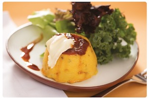

Entradas
Muzzarella Sticks
Bastones de muzzarella rebozados
Jalapeños rellenos
Jalapeños rellenos de langostino y queso Cheddar con panceta.
Ración de Rabas
220 gr. de chicharrón de calamar frito con alioli
Ración de papas fritas con Cheddar y verdeo
Chicken Wings
Alitas de pollo empanada y frita con salsa BBQ
Croquetas de hongos
Croquetas elaboradas a base de hongos disecados.
Langostinos en cous cous
Langostinos a la plancha con frutos secos, tomates cherry, albahaca y cous cou
Chipirones a la plancha
Con chutney de mango y sandía a la plancha
Nachos con refrito
Nachos salteados con porotos negros, chorizo colorado y salsa BBQ
Tapa de morcilla
Pan casero de campo, morcilla, verdeo y queso brie.
Tapa de campo
Morcilla, papa, chutney de manzana y crema de eneldo
Mollejas con mango, ananá, jengibre, chiles y pochoclo.
Voler arribaPlatos Principales

Bife Criollo
Ojo de bife con patines andinos, ensalada de rúcula, provolone y salsa criolla
Ensalada Caesar
Con langostinos o con Pollo
Clásica Caesar Salad con pollo grillado o langostinos
Penne Rigatte
Con salsa filete, crema o rosa.
Ensalada de langostinos
Langostinos salteados, trabajito, cebolla de verdeo y mango con dressing de naranja, vinagre y aceite de oliva.
Ceviche (elaborado en el momento)
Pesca del día del barrio chino con cebolla morada, ajo, rocoto, apio, cilantro, jengibre, maíz cancha, batata y leche de tigre.
Pesca con Chop Suey
Pesca del día a la plancha con olivas, ajo y alcaparras, acompañada de chop suey de vegetales.
Pesca a la plancha
Con risotto verde de espárragos y remolacha asada.
Bife T-Bone
600 gas de carne corte T-Bone con chimichurri, patines andinos y encurtido de remolacha.
Pechuguitas Ahumadas
Pechugas de pollo ahumadas, rellenas con duxelle de hongos y cebolla. Servido con arroz con mostaza y naranjas almendradas
Carré de cerdo
Con Chutney de zanahorias y batatas glaseadas con salsa teriyaki.
Sorrentinos verdes
Rellenos con calabaza asada y queso brie, perfumados con manteca de hierbas y jugo de pomelo.
Volver arribaPostres

Flan Casero
Nuestro clásico flan con dulce de leche y crema.
Ensalada de frutas
Fondue de chocolate
Con frutas frescas fileteadas.
Crocante de Banana y Nutella
Degustación de Mousses
Mousse de mango, chocolate, moka y frutos rojos.